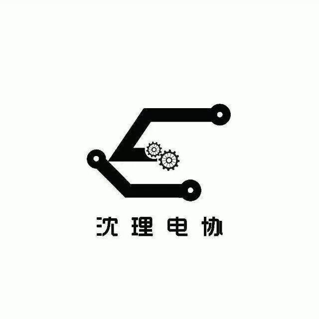
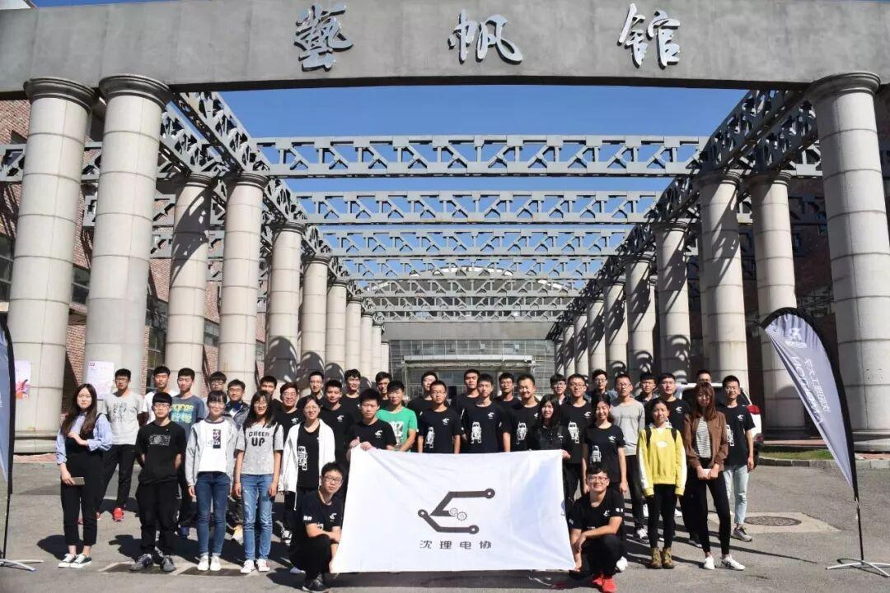

歌曲献唱——致忙碌一年的我们

歌曲献唱——致忙碌一年的我们
2018年终总结
编曲：k2k
时间悄无声息的流过，为我们留下了无数的回忆，从最开始的相聚，到如今的大家为了同一个目标不断前进，所有的回忆都汇成了这首歌，用它纪念我们经历的一切。

我怕来不及我要抱着你
直到感觉你的皱纹有了岁月的痕迹
直到肯定你是真的直到失去力气
为了你我愿意
他们说冷酷的日子总是纠集着人冷战
冷漠的依靠着那仅剩无几的冷淡
冷冰冰的风雨还有那无处躲藏的嘴脸
最后人生到底是冷清自己还是冷血人的狂欢
我固执的坚定着我心中那份不散
人体的温度交错机械工具的冰感
心中的色彩映衬3D打印的红粉
走不出的迷雾还有解不开的构场
你眼看着窗外的风景一点一点走远
曾经的心酸劳累也一幕一幕走散
就算没了方向没了目标人生一样向前
就像瞄准的枪口永远不会后退低头
眼看着四射毫无规矩毫无顾虑的弹丸
冲锋陷阵的野心就在这一时刻得到实现
可你 什么时候考虑过你
当你一无所有孤身一人直到崩盘
我不需要人的怜悯来证明你比我能干
自从选择这条道路就不会后悔不断
想白了内心一念
却明知苦海仍不知返
何德何能的道理究竟何时才能显现
我不需要人的怜悯来证明你比我能干
自从选择这条道路就不会后悔不断
想白了内心一念
却明知苦海仍不知返
一切都是未知迷雾就请你记好远看
（他们说过去的这一年就像上了“贼船”
有着那份不平凡也不一样的斗战
却依靠的是不停不断的烧脑爆肝
可我们从没后悔）（独白）
也许没有当初就不会拥有现在这份执念
步兵枪口 在我的世界里也永远不会浮现
无人机的视眼
工程子弹 哨兵坚守前位不放
一切的一切就只有 就只有梦中出现
要我说 这一年有你们的陪伴而变得并不孤单
工图 螺丝 定位 视频 跑招商慢慢变成日常
也请 就让这年成为你心中的那份
那份永远都不会忘记的甘甜
就在 某天突然梦醒来到五月战场
前路迷雾渐渐暗淡直到光照进来那瞬间
就算玉石俱焚却也再也不会感到遗憾
从未奢求过最后成功只想对得起那份心愿
却 意外有你们变得疯狂变得不愿退散
不顾冷眼人的旁观
野心就此得到实现
因为 有你 海中孤舟却也再也不想
不想停浆停泊就此上岸
我怕来不及我要抱着你
直到感觉你的皱纹有了岁月的痕迹
直到肯定你是真的直到失去力气
为了你我愿意
动也不能动也要看着你
直到感觉你的发线有了白雪的痕迹
直到视线变得模糊直到不能呼吸
让我们形影不离
如果全世界我也可以放弃
至少还有你值得我去珍惜
而你在这里就是生命的奇迹
也许全世界我也可以忘记
就是不愿意失去你的消息
你掌心的痣我总记得在那里

2019即将结束，不知道这一年里你们都收获了什么呢？可以留言到下方哦！跟大家分享这一年的收获。
说了看了这么多，相信大家一定迫不及待欣赏这首歌了吧！那么快来欣赏吧！
高清视频搜索：https://www.bilibili.com/video/av39068742